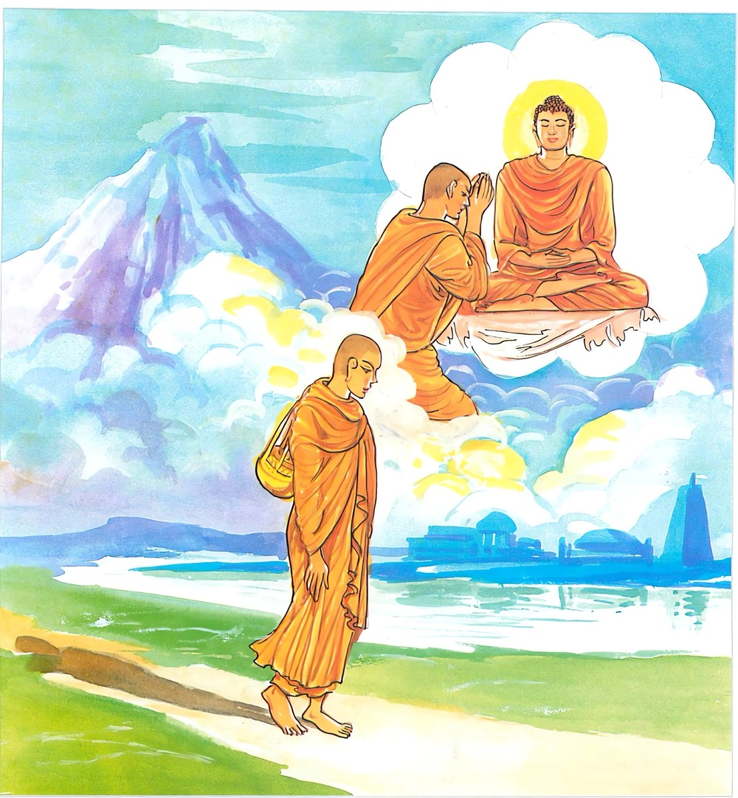

1-2 මට්ටකුණ්ඩලීදිව්යපුත්රයා
මෙම කතාව ධම්මපද අටුවාවෙන් ද කියවන්න.
මනොපුබ්බඞ්ගමා ධම්මා මනොසෙට්ඨා මනොමයා
මනසා චෙ පසන්නෙන භාසති වා කරොති වා
තතො නං සුඛමන්වෙති ඡායා’ව අනපායිනී.
(වේදනාදි චෛතසික) ධර්මයෝ සිත පෙරටු කොට ඇතියහ. සිත ශ්රේෂ්ඨ කොට ඇතියහ. සිතින් ම උපදනාහ. ඉදින් පහන් සිතින් කියන්නේ නම් හෝ කරන්නේ නම් හෝ ඒ හේතුවෙන් සැපය ඔහු කැටුව යෙයි. නොහැර කැටුව යන සෙවණැල්ල මෙනි.

සැවැත්නුවර අදින්නපුබ්බක නමින් ප්රසිද්ධ වූ බමුණෙක් විසී ය. ඔහු කිසි දිනෙක, කිසිවක් පිණිස, කිසිවට, කිසිවක් දුන්නෙක් නො වේ. එහෙයින් නුවරවැස්සෝ ඔහුට “අදින්න පුබ්බක” යි නම් තැබුහ. ඔහුට පියකරු මනවඩන පුත්රයෙක් වූයේ ය. ඒ පුතුට පැලඳීමට කඩුක්කමක් කර දෙනු කැමැති බ්රාහ්මණ තෙමේ ඒ පිණිස රන්කරුවක්හට කීයෙම් නම්, වැටුප් දිය යුතු වන්නේ ය යි සිතා, තමා ම ගෙයි තුබූ රන් කැබැල්ලක් ගෙණ තළා මට්ටම් කොට, කඩුක්කමක් සාදා දුන්නේ ය. ඒ පැලඳ ගත් බ්රාහමණපුත්ර තෙමේ ඉන් පසු “ මට්ටකුණ්ඩලී” යි ප්රසිද්ධ විය. සොළොස් වියේ දී ඔහුට පාණ්ඩුරෝගයෙක් හට ගැණින. එකල මවු තොමෝ පුතු පාණ්ඩුරෝගයෙන් පෙළෙන බව දැන, සිය හිමියා වෙත ගොස්, “හිමියෙනි! ඔබ පුත් මට්ටකුණ්ඩලී තෙමේ පාණ්ඩුරෝගයෙන් රෝගී ව වසයි, එ බැවින් වහා ඔහුට යම් කිසි පිළියමක් කරවනු මැනැවැ” යි කිවූ ය. “සොඳුරිය! බෙහෙත් කරන්නට වෙදකු ගෙණාවොත්, ඔහුට වැටුප් දිය යුතු ය, කුමක් කියහි? එයින් වන මුදල් වියදම නො බලහි දැ” යි බමුණා කීවිට, “හොඳයි, ඔහාට කැමැත්තක් කරන්නැ” යි ඈ නිහඬ වූවා ය. ඉක්බිති ඔහු අඩු වියදමකින් බෙහෙත් කරන්නට සිතා, වෙදුන් කිහිපදෙනකුන් කරා ගොස්, “අසුවල් අසුවල් ලෙඩට වෙදමහත්මයාලා කරණ බෙහෙත් මොනවා දැ” යි ඇසී ය. වෙදවරු බමුණාගේ තරාතිරම ගැණ දැන සිටි බැවින් පොතපතෙහි නම් නැති ගස් පැලෑටි කිහිපයක නම් කියා “අපි ඔබඳු ලෙඩවලට මේ මේ ගස්පැලෑටිවල කොළ පොතු මුල් මල් ගෙණ කොටා ඉස්ම ගෙණ බෙහෙත් කරන්නෙමු” යි කීහ. බමුණා ඒ අදහා ගෙණ ගෙදර අවුත් වෙදුන් කියූ කොළ පොතු මුල් මල් ගෙන්වා කොටා ඉස්ම ගෙණ පුතුට පෙවී ය. එයින් රෝගය තිබුනාට ද වඩා බලගතු ව ගියේ ය. සුවපත් කරන්නට බැරි තැනට වැටුනේ ය. එවිට බමුණු තෙමේ වෙදකු ගෙන් වී ය. වෙදා ලෙඩා බලා පරීක්ෂා කොට “මේ වේලෙහි මා විසින් කළ යුතු දෙයක් නැතැ” යි සිතා “ලෙඩාට බෙහෙත් කරන්නට මට නො හැකි ය, අන් වෙදකු ගෙන්වා ගන්නැ” යි කියා ආපසු ගියේ ය. එවිට ඔහු, පුතු මැරෙණ බව දැන “මොහු මළපසු මළගමට එන්නෝ ගෙයි ඇති දේපල බලා මට ගරහන්නෝ ය, එයට කලින් මූ ගෙයින් බැහැර කළ යුතු ය” යි සිතා බැහැර කොට පිල්කඩෙහි නිදි ගැන්වී ය.
එ දවස මාගේ ස්වාමිදරු වූ සම්මා සම්බුදුරජානන් වහන්සේ, අලුයම් වේලෙහි මහකුළුණු සමවතින් නැගිට පෙර බුදුවරුන් විෂයයෙහි කළ පැතුම් ඇති මහත් කුසල් මුල් ඇති විනෙයජන නැමැති බන්ධුන් දකිනු පිණිස බුදු ඇසින් ලොව බලා වදාරණ සේක්, දස දහසක් සක්වළ නුවණදැල පතුරා හැරි සේක. වාසනාවකට මෙන් පාණ්ඩුරෝගයෙන් ඔත්පල ව සියගෙයි පිල්කඩෙහි ඇඳ කබලකැ වැතිර හුන් මටටකුණ්ඩලියා හුන් ලෙසින් ම ඒ නුවණ දැලට අසු විය. මොන ලෙසකිනුත් පිළියම් නො කොට හැකිබවට ගොස් සිටි මට්ටකුණ්ඩලියා ගෙයින් බැහැර කොට පිල්කඩෙහි හෙවූ බව දුටු බුදුරජානන් වහන්සේ, මහකුළුණෙන් ලතෙත් වූ සේක්, “මා මෙහි යෑමෙන් වැඩෙක් වේ දෝ” යි බලා වදාළ සේක. එකෙණෙහි “මෙ තෙමේ මා කෙරෙහි සිත පහදා කලුරිය කොට තව්තිසා දෙලොව තිස් යොදුන් රන්විමනෙක උපදින්නේ ය, දෙවඟනන් දහසෙක් ඔහුට පිරිවර වන්නේ ය, අදින්නපුබ්බකයා මළසිරුර ආදහණ කොට හඬමින් සොහොනැ හැසිරෙන්නේ ය, දිව්යපුත්ර තෙමේ තුන් ගව්වක් පමණ තරම් වු වටිනා මහත් දිව්යාභරණයෙන් සරසනලද දෙවඟනන් දස දහසක් විසින් පිරිවරණලද සියඅත්බව බලා ‘කිනම් පිණකින් මා විසින් මේ මහත් සම්පත් ලද දැ’ යි බලන්නේ මා කෙරෙහි කළ සිත් පැහැදුම් පමණින් ලත් බව දැන, ‘මුදල් වියදමට බියෙන් මාගේ පියා එදා බෙහෙත් නො කොට හැර, අද සොහොනට ගොස් හඬා වැලපෙයි, එ හෙයින්. ඔහු වියරු වැටුනකු කරන්නෙමි’ යි පියා කෙරෙහි නො ඉවසීමෙන්, මට්ටකුණ්ඩලීවෙසයෙන් අවුත් සොහොනට නො දුරෙහි වැද හෙවී හඬන්නේ ය, එවිට අදින්නපුබ්බක තෙමේ ‘තෝ කවරෙක් වෙහි දැ?’ යි විචාරන්නේ ය, ‘මම තාගේ පුත්ර වූ මට්ටකුණ්ඩලී වෙමි’ යි ඔහු කියන්නේ ය, තෝ කොතැනැ උපනැ’ යි එවිට අසන්නේ ය, ‘තව්තිසාදෙව්ලොවැ’ යි දෙව්පුත් කියන්නේ ය, ‘කි නම් කුශලකර්මයකින් එහි උපන්හි දැ’ යි ඇසූ විට ‘මා කෙරෙහි කළ යම්තම් සිත් පැහැදුමෙනැ’ යි කියන්නේ ය, එවිට බමුණා ‘ඔබවහන්සේ කෙරෙහි සිත් පැහැදුමෙන් දෙව්ලොව උපන්නෝ තවත් වෙද් දැ’ යි මා අතින් විචාරන්නේ ය, එවිට මම ‘මා කෙරෙහි සිත් පහදවා ගෙණ දෙව්ලොව උපන් අයගේ ගණන, ගණන් වශයෙන් නො දැක්විය හැකි ය’ යි කියා ධම්මපදයෙහි ගාථාවක් කියන්නෙමි, ඒ දෙසුම් අවසන්හි අසූසාර දහසක් ප්රාණීන්ට ධර්මාවබෝධය වන්නේ ය, මට්ටකුණ්ඩලියාත් අදින්නපුබ්බකයාත් සෝවන් මගට පැමිණෙනු ඇත, මෙසේ මේ කුලපුතුන් නිසා මහත් ධර්මයාගයෙක් වන්නේ ය” යි උන්වහන්සේට පෙණී ගියේ ය.
එකල්හි උන්වහන්සේ මහාභික්ෂූසංඝයා පිරිවරා සැවැත් නුවරැ කෙමෙන් පිඬු සිඟා ගොස්, බමුණුගෙදරට ද වැඩි සේක. ඒ වේලෙහි, බිත්තියට මූණ ලා නිදා හුන් මට්ටකුණ්ඩලියා බුදුරජුන් එහි වැඩි බව නො දත්තේය. එ හෙයින් උන්වහන්සේ තමන් වහන්සේ එහි වැඩිබව දක්වන්නට රන්වන් සිරුරෙන් රැස්කලඹක් විහිදුවා හැරියහ. එ කෙණෙහි මාණවකයා ‘ඒ කිමැ’ යි හැරී බලන්නේ, බුදුරජුන් දැක, “මාගේ මේ මෝඩ පියා නිසා මෙබඳු බුදුරජුන් කරා එළැඹැ වතාවතක් කරන්නට දානයක් දෙන්නට බණ පදයක් අසන්නට නො හැකි වීමි. දැන් නම් අනේ! මාගේ අත් පාද මට කීකරු නැත, හිත පහදා ගැණීම මිසක් දැන් කළයුතු අනෙකෙක් නැතැ” යි බුදු රජුන් කෙරෙහි සිත පහදා ගත්තේය. උන්වහන්සේ, මට්ටකුණ්ඩලියා තමන් වහන්සේ කෙරෙහි සිත පහදා ගත්බව දැන, “මොහුට දෙව්ලොව ඉපදීමට මේ පමණැ” යි සිතා, ආපසු විහාරයට වැඩි සේක. මට්ටකුණ්ඩලී තෙමේ බුදුරජුන් නො පෙණීයත් ම මියගොස් තව්තිසා දෙව්ලොව උපන.
ඉක්බිති බ්රාහ්මණ තෙමේ මළ සිරුර දවා සොහොනට ගොස් “අනේ! එක් ම පුත! නුඹ කොතැන ගියහි? අනේ! එක් ම පුත! කොතැන ගියහි” යි නන් දොඩමින්, අඬමින්, වැලපෙමින් දිනපතා සොහොනෙහි හැසිරෙන්නට වන. දෙව්ලොව දිවඅත්බව ලබා උපන් මට්ටකුණ්ඩලී තෙමේ හදිසියෙන් තමන් ලත් සමපත්තිය බලා, “කුමන පිණකින් මේ ලද දැ” යි විමසන විට, බුදුරජුන් කෙරෙහි කළ සිත් පැහැදුමෙන් බව දැන “මාගේ පියා මා ලෙඩින් සිටිය දී බෙහෙත් නො කරවා, දැන් සොහොනට ගොස් අඬයි, මොහු පිස්සකු උමතුවූවකු කරන්නට වටී ය” යි සිතා, මට්ටකුණ්ඩලී වෙසයෙන් එහි අවුත් සොහොනට නො දුරෙහි සිට හිසැ දෙඅත් බැඳ අඬන්නට වන. පුත්සොවින් සොහොනෙහි අඬන අදින්නපුබ්බක තෙමේ ඔහු දැක “හා! මොක ද අඬනෙහි? මම පුත්සොවින් අඬමි, උඹ?” යි දිව්යපුත්රයාගෙන්
ඕය්!
“නනබරණ ඇඟ ලූ - කඩුක්කම් කන් රැඳ වූ,
මල්බරිනි බෝ බර වූ - රන්වන් සඳුන’ලෙව් දුන්.
ඔබ මේ මහාවන - මැද එකලා ව දෙයත ද,
බැඳ හිසැ හඬා වැලපෙහි - කිම දුකට පත්වූයෙහි?”
යි ඇසී ය. එවිට දිව්යපුත්ර තෙමේ මෙසේ කී ය.
“රනින් කළ පහසර - ලැබුනේ ය රියපඳුරෙක්,
සක් සඟළෙක් එයට නැත - දිවි හරිමි මම එදුකින්” යි.
බ්රාහමණ තෙමේ;
“සොඳුර! කිය මට දැන් - සක් සඟළක් කර දෙමි,
මිණියෙන් හෝ රනින් හෝ - රිදියෙන් හෝ ලෝහයෙන්” යි
කී ය. දිව්ය පුත්ර තෙමේ ඒ අසා, එදා පුතුට බෙහෙත් නො කොට සිට අද පුතු වැනි මා දැක අඬමින් වැලපෙමින් රන් රිදියෙන් රිය සකස් කර දෙමි, යි කිය යි “හොඳා’ එසේ වේවා” යි සිතා “තමුසේ කො තරම් මහත් සක් සඟළක් කර දෙන්නහු දැ” යි ඇසී ය. බමුණා “නුඹ බලාපොරොත්තු වන්නෙහි යම්පමණ එකෙක් නම්, එ තරම් එකෙකැ” යි කී විට දිව්යපුත්ර තෙමේ “මට වුවමනා සඳ හිරු දෙදෙනා ය” යි කියා ඒ ඉල්ලමින්,
“මා රන්මුවා රිය - බබලනුයෙ සඳහිරුගෙනි,
දෙනු මට රැගෙණ එ දෙ දෙන - කී ය ඔහු ඒ බමුණුට”
එවිට බමුණා,
“නො පැතිය යුත්ත ඔබ - පතනා නුවණ නැත්තෙහි,
නො ලැබේ ය තට සඳහිරු - ඉන් ඔබ මැරී යනු ඇත” යි
කී ය, දිව්යපුත්ර තෙමේ “මොක ද ඔහොම කියන්නෙහි, පෙණෙන දෙයක් ගැන හඬන්නේ මෝඩයා ද? නැත, නො පෙනෙන දෙයක් ගැණ හඬන්නා මෝඩයා දැ” යි අසා මෙ ද කී ය.
“පෙණේ උන් යනෙනු - පැහ සටහන් ද පැහදිලි,
පෙණේ ගමන් වේ මග - ඔවුන් යනෙනා අහසේ.
එ නමුත් බමුණ! ඒ - පරලොව ගියේ නො පෙණේ,
වැලපෙන අප දෙදෙනතර - කවරෙක් නුවණ නැත්තේ” යි
බමුණා මෙය අසා, “මේ තෙමේ කියන්නේ ඇත්තෙක්මය” යි සලකා
“සැබවකි, ඔබ කියුම් - මම වෙමි නුවණ නැත්තේ,
සඳට වැලපෙන දරු සේ - මළහු පතමින් හඬනා” යි
මෙසේ කියා ඔහුගේ කතාවෙන් ශෝක නැත්තෙක් ව ඔහුට,
“ගිතෙල් ඉසි ගිනි සේ - සෝගිනි ඇවිළ ගත් මා,
දිය ඉස නිවන්නකු සේ - සියලු සතැවිලි නිවිහී,
යමෙක් දැඩි සොවිනී - පෙළුනු මාගේ පුත්සෝ,
දුරු කෙළෙ ද, හේ මාගේ - හද සෝ හුල් උදුරැ ලී,
ඒ මම ඔබ වදන් - අසා හළහුල් ඇත්තෙම්,
සිහිල් වූයේ නිවුනේ - නො හඬමි සෝක නො කරමි” යි
ඔහුට ස්තුති කොට නැවැත,
“දෙවියෙක් ද? ඔබ කිම - ගඳඛෙක් ද? නැත, දෙවිඳු ද?
කවරෙක් ද? කාගේ පුත් - වෙහි දැ යි කෙසේ දනිමු ද?”
යි ඔහු පිළිබඳ තොරතුරු ඇසී ය. එවිට දිව්යපුත්රයා,
“දවා පුතු සොහොනෙහි - දැන් යම් පුතකු උදෙසා,
මෙහි හඬා වැලපෙහි නම් - ඒ පුත් මම ය ඔබගේ,
කුසල් කම් කොට මම් - සහබවට දෙවියන්ගේ,
ගියෙ මිනිසත් බව හැර - දැන් විඳිමි දෙව්සැපතුම්”
යි කී විට,
“මඳ හෝ නො මඳ හෝ - දනක් දෙනු සිය මැදුරේ,
පෙහෙවස් රැකුම් හෝ කිසි - එබඳු පින්කම් කරණු,
කිසිදිනෙක නො දිටිමි - කිය! කිනම් කමකින් ඔබ,
දෙව්ලොව ගියේ වෙහි දැ යි - සතුටට කරුණු වේ එය”
යි බමුණ ඇසී ය. එවිට,
“සිය නිවසැ සිටියෙම් - හටගත් රෝග ඇත්තෙම්,
දුකට පත්වූයේ මම් - පෙළුනම් ගිලන් වූයෙම්,
සිවු සස් දහම් දත් - පහකළ කෙලෙස් මුල් ඇති,
සැක හැර සිටි සුගත් සඳ - දිටිමි පිරිපුන් නුවණැති,
තුටු සිත් ඇති එ මම - බුදුනට ඇඳිලි කෙළෙමි,
ඒ කුසල් බෙලෙන් මම් එහි - ගියෙක් දෙවියන් සහබව”
යි දේවපුත්ර තෙමේ මහත් සතුටින් කියා සිටියේ ය. දෙව් පුත් මෙසේ කියත් කියත් ම බමුණගේ මුළු සිරුර සතුටින් පිරී ගියේ ය. ඔහු ඒ සතුට පවසන්නට,
“මෙබඳු ඇඳිලීකම් - විපා පුදුමෙක! අරුමෙක!,
පෙර නො වූවෙක! මම අද - බුදුන් සරණැයි ගණිමි”
යි මෙසේ කී ය. නැවැත ඔහුට දේවපුත්ර තෙමේ,
“පහන් සිතැති ව ඔබ - බුදුන් හා දම් සඟ තුම්”
සරණ ගොස් පන්සිල් රකු - නො කඩ කොට දැඩිසේ ගෙණ,
පණිවාය සොරකම - මත්පැන් බීම බොරුබස,
යන මේ පවින් දුරු වෙව - සියඹුව හා ම තුටු වෙව”
යි අවවාද දුන්නේ ය. බමුණ, ඒ පිළිගණිමින්,
“යක් ඔබ මෙ මට අත් - කැමැත්තෙහි, හිතවත් වෙහි,
ඇදුරෙහි වැඩි කැමැත්තෙහි - ඔබ වදන් මම කරමි,
පිහිටැ යි දරම් මම් - බුදුරජු ද තුම් දහම ද,
නරදෙවිඳුටූත් සඟන ද - සරණ කොට යම් දිවිහිම්,
පරපණ නැසීමෙනි - වහා වැළකෙම් සොරකම,
හැර යම් නො බොම් මත් පැන් - බොරු ද නො කියා සිටිමී,
තුටුවෙම් සියඹු හා - පරඹුවන් ඇස හැර වත්,
නො බලම් මෙසේ පන්සිල් - රකිම් දෙවියෙනි! සත්ත යි”
කියා පොරොන්දු වූ කල්හි “බ්රාහ්මණය! ඔබගේ ගෙයි බොහෝ වස්තුව තිබේ, එ හෙයින් නිතර දන් දෙව! පන්සල් යව! බණ අසව! බණේ නො තේරෙන තැන් අසා දැන ගණුව, දුප්පතුන්ට හා අසල්වැසියනට හොඳට සලකව! සසුන් දියුණුවෙහි තරව යෙදෙව!” යනාදීන් අවවාද දී වැඩ දක්වා අතුරුදහන් විය. ඉක්බිති බමුණු තෙමේ ගෙට ගොස් බැමිණිය අමතා “සොඳුරිය! මම ශ්රමණ ගෞතමයන් වහන්සේ මෙහි වැඩමවා ගෙණ ධර්මසාකච්ඡාවක් කිරීමට අදහස් කර ගෙණ සිටිමි, උඹ එයට උදවු දිය යුතු ය, උන්වහසේට සියලු සැලකිලි ඔයා අතින් කෙරෙන්නට ඕනෑ ය” යි කියා පන්සලට ගොස් වැඳුම් පිදුම් සැලකිලි කිසිවක් නො කොට පැත්තක සිට ගෙණ “ගෞතමයන් වහන්ස! භික්ෂු සංඝයාත් සමග හෙට දවසැ දානය පිණිස අප ගෙට වැඩම කරන්නැ” යි ආරාධනා කෙළේ ය. බුදුරජානන් වහන්සේ එය පිළිගත්හ. බමුණා පෙරළා ගෙට ගොස් කෑම් බීම් හැම දෙයක් ම වහා පිළියෙල කරවී ය. පසු දා බුදුරජානන් වහන්සේ භික්ෂු සංඝයාත් කැටුව එහි වැඩම කොට පිළියෙල කොට තුබූ අසුනෙහි වැඩහුන් සේක. බමුණා උන්වහන්සේලා මැනැවින් වැලඳ වී ය. මහාජන තෙමේ ද එහි රැස් විය. ඔවුන් අතුරෙහි මිසදිටු ගත්තෝ “ප්රශ්න ඇසීමෙන් වෙහෙස කරණ ශ්රමණ ගෞතමයා බලන්නෙමු” යි ආහ. බෞද්ධ මහාජන තෙමේ ආයේ බුදුරජානන් වහන්සේගේ ආශ්චර්ය්යවත් මහත් වූ බුද්ධවිලාසය බලන්නට ය. දන් වලඳා අවසන් කළ බුදුරජුන් වෙත ගිය බමුණු තෙමේ මිටි බන්කුවක් ගෙණ එහි වාඩිවී, “ගෞතමයන් වහන්ස! නුඹවහන්සේට කිසිදාක දන් නො දී අන් එබඳු පූජාවකුත් නො කොට හැර බණදහමකුත් නො අසා පෙහෙවස් නො රැක තනිකර හිත් පැහැදුමෙන් දෙව්ලොව උපන් අය ඇද්දැ” යි ඇසී ය. “බමුණ! මා විචාරන්නහු කිම? තාගේ පුත් මට්ටකුණ්ඩලී තෙමේ මා කෙරෙහි සිත පහදා ගත් පමණින් දෙව්ලොව උපන් බව තට කීයේ නො වේ දැ” යි වදාළ විට “කවදා දැ” යි හේ ඇසී ය. බුදුරජානන් වහන්සේ “ඇයි! නුඹ සොහොනට ගොස් එහි අඬ අඬා සිටිය දී, නුඹ සේ ම එහි හඬ හඬා හුන් මිනිසකු හා ඒ ගැණ කතා කළහු නො වහු ද? ඔහු ඒ ගැණ කීයේ නො වේ ද? බමුණ! මා කෙරෙහි පැහැදීමෙන් දෙව්ලොව උපන්නවුන්ගේ ගණන ඉතා මහත් ය” යි වදාරා එහි රැස් ව සිටි මිනිසුන්ගේ විමති දුරු කරනු පිණිස මට්ටකුණ්ඩලී දේවපුත්රයා එහි ගෙන් වූ සේක. ඔහු ද තුන් ගවු පමණැති දිවබරණින් සැරසූ අත් බැවින් යුක්ත ව විමානය ද ගෙණ එහි පැමිණ විමානයෙන් බැස බුදුරජුන් වැඳ පසෙක සිටියේ ය. “තා මේ සම්පත් කි නම් පින් කමකින් ලද දැ” යි බුදුරජුන් ඔහු අතින් විචාළ කල්හි ඔබවහන්සේ කෙරෙහි සිත පැහැදීමෙනැ” යි හේ කී ය. මහාජන තෙමේ විමානය සමග පැමිණි මට්ටකුණ්ඩලියා දැක “අය්යෝ! බුදුගුණ මහා පුදුමෙක! එය කෙසේ වැණිය හැකි ද? මට්ටකුණ්ඩලියා අන් කිසිත් පින්කමක් නො කොට බුදුරජුන් කෙරෙහි පැහැදීමෙන් පමණක් මෙබඳු මහත් සැපතක් ලද නම්, එය කො තරම් ආශ්චර්ය්යවත් දැ” යි කියන්නට වන. ඔවුන්ගේ සතුට සීමා රහිත විය.
ඉක්බිති බුදුරජානන් වහන්සේ ඔවුන් මැද කුසල් අකුසල් කිරීමේ දී සිත පෙරටු වන බව ද, සිත එහිලා ප්රධාන වන බව ද, පහන් සිතින් කළ කුශලකර්මය, කළ පුගුලහු තමන් අත් නො හැර යන සෙවනැල්ල මෙන් ඔහු පසු පස ගොස් දෙව්ලොවට හා මිනිස්ලොව උසස් තැනට පමුණුවන බව ද වදාළ සේක. වදාළෝ මෙසේ ය:-
මනො පුබ්බඞ්ගමා ධම්මා මනොසෙට්ඨා මනොමයා
මනසා චෙ පසන්නෙන භාසති වා කරොති වා,
තතො නං සුඛමන්වෙති ඡායා ව අනපායිනී ති.
අරූපීධර්මයෝ සිත පෙරටු කොට ඇත්තාහ. සිත අධිපති කොට ඇත්තාහ. සිතින් කරණ ලදහ. ඉදින් පහන් සිතින් යමක් කියා ද, යමක් කෙරේ ද ඒ හේතුවෙන් විපාකසුඛය ඒ සුචරිත සමඞ්ගී පුද්ගලයා අනුව යයි. (කුමක් මෙන් ද යත්,) සිරුරෙන් පහව නො යන සෙවනැල්ල සේ ය.
මනො පුබ්බඞ්ගමා ධම්මා = අරූපීධර්මයෝ සිත පෙරටු කොට ඇත්තාහ.
සාමාන්යයෙන් ධම්මා යන්නෙන්, අරූපස්කන්ධ තුණ කියැවුන ද, මෙහිලා ගැණෙනුවෝ ඒ ස්කන්ධ තුණට අයත් කුශල චෛතසිකයෝ ය. ඔවුහු ද යට කියූ සේ සත්ව පුද්ගල රහිත බැවින් ස්වලක්ෂණධාරණමාත්රයෙන් ධර්ම නම් වෙත්. කුශලචෛතසිකයන්ගේ උත්පත්තියට සෝමනස්සසහගතඤාණසම්පයුත්තචිත්තය ප්රත්යය වන බැවින් ඒ කුශලචෛතසිකයෝ සිත පෙරටු කොට ඇත්තාහ, යනු වදාළ සේක. චෛතසිකයෝ උපදින්නෝත් නිරුද්ධ වන්නෝත් සිත හා එක් ව ම ය. අරමුණු ගන්නෝත් එක් වස්තුවෙක රැඳෙන්නෝත් සිත හා එක් ව ම ය.
මනො යන්න, කාමාවචරාදි භේද ඇති හැම සිතක් උදෙසා ම නො වෙනස් ව යෙදිය හැකි ය. එහෙත් ඒ මෙහි යෙදුනේ කාමාවචර කුසල් සිත් අට අතුරෙහි වූ සෝමනස්සසහගත ඤාණසම්පයුත්ත චිත්තය උදෙසා ය. මේ වස්තුව දෙසීමට නිමිති වූයේ ඒ සිත ය. (එහි විස්තර පිණිස චිත්තවර්ගයෙහි “ඵන්දනං චපලං චිත්තං” යන්නට කළ පරිකථාව බලනු.)
“මනොති අවිසෙසෙන සබ්බම්පි චතුභුමිකචිත්තං වුච්චති, ඉමස්මිං පන පදෙ නියමියමානං වවත්ථාපියමානං පරිච්ඡිජ්ජිය මානං අට්ඨවිධං කාමාවචරචීත්තං ලබ්භති, වත්ථුවසෙන පනාහරියමානං නතොපි සොමනස්සසහගතං ඤාණසම්පයුත්තං චිත්තමෙවලබ්භති” යනු අටුවා ය.
බොහෝ දෙනකු එකතු ව දන් පින්කම් ඈ කරණ කල්හි යමෙක් එහි පෙරටු වේ ද, යමකු නිසා අන්යයෝ එය කෙරෙත් ද, ඔහු ම එහි ප්රධානයා ලෙස ගණිනු ලැබේ. එ මෙන් මේ සෝමනස්සසහගතඤාණසම්පයුත්තචිත්තය හැම කුශලචෛතසිකයකගේ ම උත්පත්තියට හේතු වන බැවින්, උපකාර වන බැවින් ප්රධාන වේ. චෛතසිකයන්ගේ පෙරටුවෙහි යන්නේ වේ.
මනොසෙට්ඨා = (අරූපීධර්මයෝ) සිත අධිපති කොට ඇත්තාහ.
සිත නො උපන්නොත් චෛතසිකයන්ගේ ඉපදීමෙක් නැත. ඇතැම් චෛතසික නො උපන්න ද, සිත නම් උපදී. එ හෙයින් චෛතසික, සිත අධිපති කොට සිටියේ ය. ගණයට අධිපතියා “ගණසෙට්ඨ’ යි ද, සෙනාවට අධිපතියා ‘සෙනිසෙඨ’ යි ද කියන්නා සේ චෛතසිකයන්ට අධිපති වූයේ සිත ය. එ හෙයින් චෛතසිකයෝ සිත ශ්රේෂ්ඨ කොට සිටියහ යි කියත්.
මනොමයා = සිතින් කරණ ලද්දාහ.
රනින් රිදියෙන් කළ ඒ ඒ බඩු රන්බඩු-රිදීබඩු යි ගන්නා සේ චෛතසික, සිතින් ම නිපන් බැවින් ‘මනෝමය’ යි කියනු ලැබේ.
මනසා චෙ පසන්නෙන = ඉදින් පහන් සිතින්.
සිත පහන් වන්නට නම්, එහි අලෝභ - අදෝසාදී වූ කුශල චෛතසික යෙදිය යුතු ය. නැත, සිත පහන් නො වේ. උන් යෙදුනු විට සිත පහන් වේ. එබඳු ගුණයන්ගේ යෙදීමෙන් පහන් වූ සිතින් ය යන අර්ත්ථ යි.
භාසති වා කරොති වා = කියා නම් හෝ කෙරේ නම් හෝ.
මෙබඳු පිරිසිදු සිතින් යමෙක් යමක් කියා ද, ඒ කියන හැම, වාක්සුචරිත ය. ඒ වාක්සුවරිතය සිවු වැදෑරුම් ය. පිරිසිදු සිතින් යමෙක් යමක් කෙරේ ද, ඒ කරණ හැම, කායසුචරිත ය. ඒ තෙ වැදැරුම් ය. අලෝභ-අදෝසාදී වූ ගුණ යෙදුනු සිතැත්තහුට බොරු කියනු, කේලාම් කියනු, රළුබස් කියනු, නන් දොඩනු, සතුන් මරණු, සොරකම් කරණු, පරපුරුෂපරස්ත්රී සේවනය කරණු බැරි ය. එහිලා සිත නතු නො වේ. ඔහු මේ හැම එකකින් ම මොනවට රැකේ. කායවාක්සුචරිතය නො කළ ද, නො කියුව ද, අලෝභාදී වූ ගුණ යෝගයෙන් සිත පහන් බැවින් මනස්සුචරිතය පිරේ. මනස්සුචරිතය ද තෙ වැදෑරුම් ය. මෙසේ මොහුට දශකුශලකර්මපථය ම සම්පූර්ණ වන්නේ ය. මෙයින් අදහස් කරණ ලද්දේ කාමාවචර - රූපාවචර - අරූපාවචර කුසල් ය.
තතො නං සුඛං අන්වෙති = ඒ හේතුවෙන් සැපය ඔහු අනු ව යයි.
කාමරූපාරූප යන භූමිත්රයට අයත් සුචරිතයන්ගේ බලයෙන් මනුෂ්ය-දිව්ය-බ්රහ්මලෝක යන සුගතියක හෝ දුගතියෙහි සුව විදින තැනෙක හෝ ඉපිද සිටියහු අනු ව, කායික-චෛතසික විපාක සුඛය ගමන්කරන්නේ ය. කළහු පසුපස්සේ ලුහු බැඳ යන්නේ ය.
මේ කායික - චෛතසික විපාකසුඛය කායවත්ථුක-ඉතරවත්ථුක-අවත්ථුක යි තෙ පරිදි ය. එහි කයට සුව දෙන මොළොක් පහසක් ලැබුනු විට එහි එල්බ උපදනා කායවිඤ්ඤාණචිත්තයෙහි හා ඒ චිත්තවීථිය පිළිබඳ ජවනයන්හි ද යෙදෙන සුඛවේදනාව කායවත්ථුක සුඛ නමි. චක්ඛු - සෝත - ඝාණ -ජිහ්වා - හදය යන මොවුනට ප්රිය වූ රූපශබ්දාදී වූ අරමුණක් හමු වූ විට එහි එල්බ උපදනා චක්ෂුර්ද්වාරිකචිත්තවීථින් පිළිබඳ ජවනයන්හි යෙදෙන සුඛවේදනාව ඉතර වත්ථුකසුඛ නමි.
චක්ඛුවත්ථු ආදී වූ සය මුළුමනින් ලැබෙනුයේ කාමභූමියෙහි ය. නරක - තිරච්ඡාන - පෙත - අසුර යන අපාය භූමි සතර හා මනුස්ස - චාතුම්මහාරාජික - තාවතිංස - යාම - තුසිත - නිම්මානරති - පරනිම්මිතවසවත්ති යන සුගති භූමීහු සතත් කාමභූමීහු ය. මුළුල්ල එකොළොසෙකි. කායවත්ථුක - ඉතරවත්ථුකසුඛය ලැබෙනුයේ මේ කාමභූමියෙහි ම පමණෙකි. රූපධර්ම නො අඩු ව ලැබෙන්නේ මෙහි ය. එ හෙයින් අවත්ථුකසුඛයෙක් නම් නො ලැබේ.
බ්රහ්මපාරිසජ්ජ - බ්රහ්මපුරෝහිත - මහාබ්රහ්ම යි ප්රථමද්ධ්යානභූමි තුණෙක. පරිත්තාභ - අප්පමාණාභ - ආභස්සර යි ද්විතීයද්ධ්යානභූමි තුණෙක. පරිත්තසුභ - අප්පමාණසුභ - සුභකිණ්ණ යි තෘතීය ද්ධ්යානභූමි තුණෙක. වෙහප්ඵල - අසඤ්ඤසත්ත - අවිහ - අතප්ප - සුදස්ස - සුදස්සී - අකනිට්ඨ යි චතුර්ත්ථද්ධ්යානභූමි සතෙකැ යි රූපාවචර භූමි සොළොසෙකි. රූපීබ්රහ්මයන්ට චක්ඛු - සෝත - හදය යන වස්තු තුණ ලැබේ. ඝාණ - ජිහ්වා - කාය යන වස්තුහු එහි නො ලැබෙති. එබැවින් රූපී බ්රහ්මයන්ට ලැබෙනුයේ පුර්වොක්ත වස්තුත්රය ඇසුරු කළ සුවය යි. ඒ සුවය සවස්තුක ය. හෘදයවස්තුව ඇති බැවිනි. මේ වස්තු ඔවුනට ලැබෙනුයේ ද, බුදුන් දැකුම් බණ ඇසුම් ආදිය සඳහා ය.
ආකාසානඤ්චායතන - විඤ්ඤාණඤ්චායතන - ආකිඤ්චඤ්ඤායතන - නෙවසඤ්ඤානාසඤ්ඤායතන යන සතර, අරූප භූමීහු ය.
මෙකී අරූපබ්රහ්මලෝකවල එක ද වස්තුවෙක් නො ලැබේ. රූපවිරාගභාවනා බලයෙන් ඒ නසා හැරිය බැවිනි. හෘදයවස්තුවෙන් තොර ව ම එහි සිතේ පැවැත්ම ද වේ. මෙසේ බැවින් මොවුනට ලැබෙන ධ්යානසුඛය ය අවත්ථුක නම්.
ඡායා ඉව අනපායිනී = සිරුරෙන් පහ නො වන සෙවනැල්ල සේ ය.
ත්රිවිධ සුචරිතයෙහි නිතර යෙදී බැඳී සිටි පුද්ගලයා සුගතියෙහි හෝ දුගතියෙහි සුව විඳින්නට සුදුසු තැනෙක හෝ උපන්නේ ද, කායික-චෛතසික විපාකසුඛය, ඔහු පස්සේ, ඔහු අත් නො හැර යන්නේ ය. සෙවනැල්ල සේ ය යන්නේ
“නත්ථි අපායො අස්සාති අනපායිනී” යනු අනපායිනී යන්නෙහි විවෘති යි. සෙවනැල්ලට නිමිත්ත වූ වස්තු ව තිබෙනතුරු නො නැසී පවත්නීය යනු අරුත් ය. නිශ්චලය. අපායශූන්යය අනශ්වරය.
සිරුර පිළිබඳ සෙවනැල්ල සිරුර පිළිබඳ බැවින්, යන විට යයි. සිටින විට සිටියි. හිඳින විට හිඳියි. නිදන විට නිදයි. මොළොක් බසින් කියා හෝ, රළු බසින් කියා හෝ කොයිලෙසකිනුත් නවතාලන්නට බැරි ය. තළා පෙළාත් නවතනු බැරි ය. එසේ බැරි, සෙවනැල්ල සිරුර පිළිබඳ බැවිනි. එ මෙන් පහන් සිතින් කළ දශකුශල කර්මයන්ගේ විපාක බලවේගය, ඒ පින්කළහු පසුපස ඔහු අත් නො හැර යයි. එයින් ඔහු ගිය ගිය තැන උපනුපන් තැන දිගා ඇත්තේ වෙයි. පැහැපත් වෙයි. සුවපත් වෙයි. උදාරවත් වෙයි. බුද්ධිමත් වෙයි. විශාරද වෙයි.
“යථා හි ඡායා නාම සරීරපටිබද්ධා සරීරෙ ගච්ඡන්තෙ ගච්ඡති, තිට්ඨන්තෙ තිට්ඨති, නිසීදන්තෙ නිසීදති, න සක්කා සණ්හෙන වා ඵරුසෙන වා නිවත්තාහීති වත්වා වා පොඨෙත්වා වා නිවත්තාපෙතුං, කස්මා? සරීරපටිබද්ධත්තා. එවමෙව ඉමෙසං දසන්නං කුසලකම්මපථානං ආචිණ්ණසමාචිණ්ණමුලකං කාමාවචරාදිභෙදං කායිකචෙතසිකසුඛං ගතගතට්ඨානෙ අනපායිනී ඡායා විය හුවා න විජහති” යනු අටුවා.
මෙසේ වදාළ මේ ධර්මදේශනාවගේ අවසන්හි අසූ සාර දහසක් දෙනාට ධර්මාවබෝධය විය. මට්ටකුණ්ඩලී-අදින්නපුබ්බක දෙදෙනා සෝවන්ඵලයෙහි පිහිටියෝ ය. අදින්නපුබ්බක තෙමේ උපයා තුබූ සියලු වස්තුව බුදුසසුන් දියුණුවට යෙදී ය.
මට්ටකුණ්ඩලී වස්තුව නිමි.